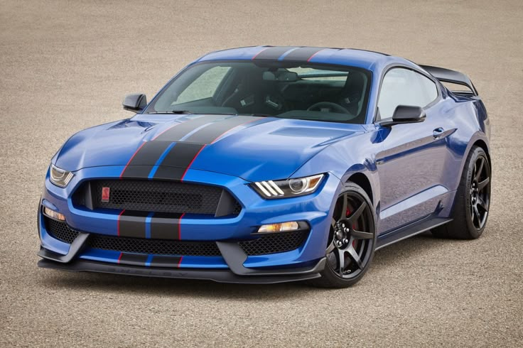
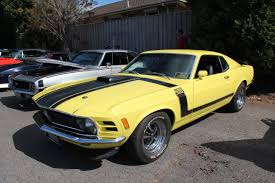
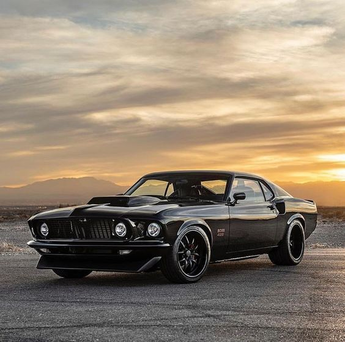
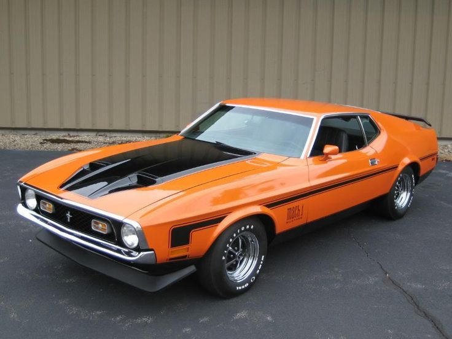
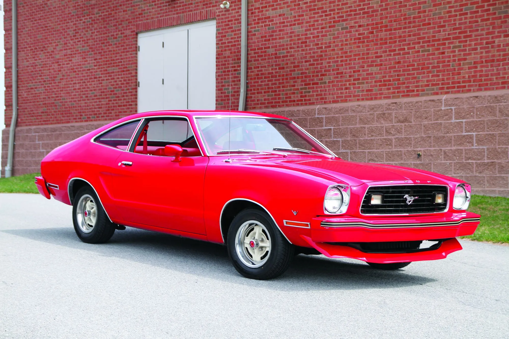
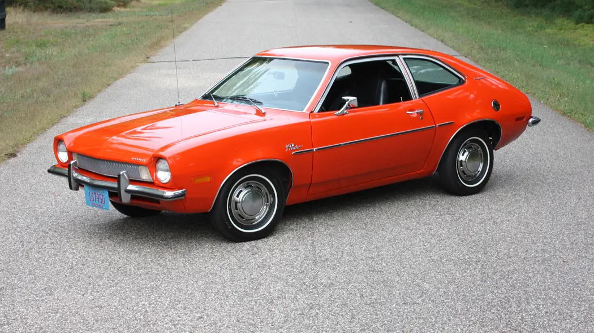

The Launch That Rewrote History
Introduced at the 1964 World's Fair in New York, the Ford Mustang arrived as something America didn't know it needed a sleek, affordable sporty car with a long hood, short deck, and an unmistakable silhouette. Originally forecast to sell 100,000 units a year, it obliterated expectations: over 400,000 were sold in its first twelve months alone, making it the most successful vehicle launch since the Model A in 1927.
in 1927.
The millionth Mustang rolled off the line within two years of its debut. Priced accessibly and offered as both a fastback coupe and convertible, the Mustang democratized performance you didn't need a racing budget to look like you had one.
Born the Pony Car, Bred for Glory
The Mustang didn't just launch a car it launched an entire category. The term "pony car" was coined specifically to describe the Mustang's formula: compact, stylish, long hood, short rear deck, and attainable price. Competitors scrambled to respond. The Chevrolet Camaro and Pontiac Firebird followed in 1967, the AMC Javelin in 1968, and the Dodge Challenger in 1970. Even global automakers took notice Toyota's Celica and Ford's own Capri in Europe drew direct inspiration from the Mustang's proportions and philosophy.    
Throughout this era, the Mustang evolved rapidly. Performance variants multiplied: the Shelby GT350 and
and
Adapting to a Changing World
The 1970s brought fuel crises, tightening emissions regulations, and a cultural shift away from raw horsepower. Ford responded with the Mustang II  
It remains the most divisive chapter in Mustang history a compromise born of necessity, and one that Ford would decisively move past by decade's end.
The Fox Body Renaissance
The 1979 Mustang introduced the Fox platform a flexible architecture that would underpin 14 Ford vehicles over 25 years. The Mustang was the last to use it, and arguably the most beloved. The return of the 5.0-liter V8 in the early 1980s reignited performance enthusiasm, and the Fox-body Mustang became a staple of drag strips, tuner culture, and American car culture at large.
The GT, Cobra, and later SVT variants kept the performance flame burning through two and a half decades of evolution. By the time production on the Fox platform ended in 2004, the Mustang had outlasted every other vehicle that shared its bones.
A Retro Soul, Reborn
For its fortieth anniversary in 2005, Ford unveiled a Mustang that paid deliberate homage to the 1960s originals wide haunches, long hood, classic tri-bar taillights while housing thoroughly modern engineering beneath. The D2C platform, built exclusively for the Mustang, gave engineers freedom to optimize for performance and handling without compromise.
In August 2018, Ford produced the ten-millionth Mustang fittingly, a Wimbledon White convertible with a V8 engine, an intentional mirror of the very first 1965 model. Today, the seventh-generation Mustang continues in production, available globally in markets that would have seemed unimaginable to the engineers who built that first car sixty years ago. The Dark Horse , Shelby GT500, and Mach 1 carry the performance legacy forward, while the nameplate endures as Ford's longest continuously produced automobile.
, Shelby GT500, and Mach 1 carry the performance legacy forward, while the nameplate endures as Ford's longest continuously produced automobile.
Generation of the Name Plate
Introduced in 1964, the Ford Mustang became one of the most significant automotive nameplates in history. Inspired by both the image of the free‑running American mustang horse and the famed P‑51 Mustang fighter aircraft, the name represented speed, independence, and American optimism. Over more than six decades, the Mustang has adapted to changing markets, regulations, and tastes while remaining unmistakably itself.